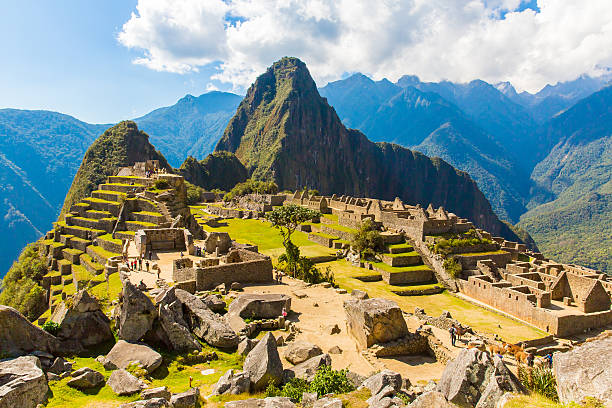
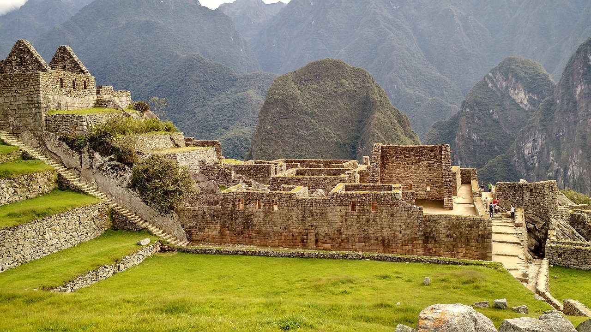
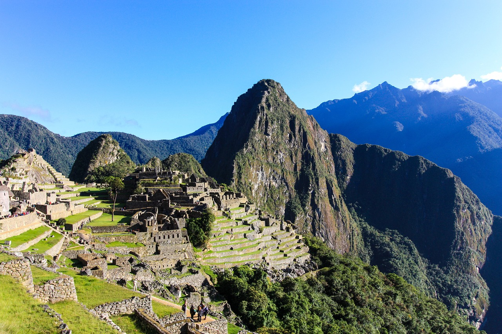

Le Machu Picchu et son histoire





Situé au Pérou, dans les Andes, à 2.430 mètres d'altitude, le Machu Picchu semble littéralement émerger de la forêt tropicale. Ce site spectaculaire, édifié sur une crête rocheuse entourée de précipices abrupts, s'étend sur près de 13 km². Il a été classé au patrimoine mondial de l'humanité en 1983. Découvrez son histoire.
Il est en réalité impossible de se prononcer avec certitude sur l'origine exacte du Machu Picchu. Mais la plupart des archéologues s'accordent à penser que l'empereur inca Pachacutec aurait découvert le site au XVe siècle, au cours d'une campagne militaire. Séduit par la majesté du lieu qu'une particularité topographique rendait facile à défendre, il y aurait édifié une ville-citadelle.
Situé entre les Andes péruviennes et le bassin de l'Amazonie, ce sanctuaire est le plus important patrimoine matériel laissé par la civilisation inca, et l'une des plus exceptionnelles réalisations architecturales et artistiques au monde. De nombreux mystères liés au Machu Picchu sont irrésolus, comme les connaissances des Incas en matière d'astronomie.
Le Sanctuaire historique de Machu Picchu est un témoignage unique sur la civilisation des Incas qui montre une répartition bien planifiée des fonctions dans l’espace, un contrôle du territoire et une organisation sociale, productive, religieuse et administrative.
Le site du Machu Picchu se compose :
- d'une zone urbaine constituée de quelque 200 constructions, où l'on trouve encore les habitations réservées à la noblesse et les édifices religieux (temple du soleil, mausolée de l'Inca...) ;
- d'une zone rurale avec ses cultures en terrasses et ses canaux d'irrigation.
Le Machu Picchu, une mystérieuse cité inca
Après plusieurs dizaines d'années de grand dynamisme sur le site du Machu Picchu, la vallée devint l'un des derniers refuges des Incas face aux conquistadors espagnols. L'assassinat de l'empereur Atahualpa par l'Espagnol Pizzaron marqua la fin de la civilisation inca.
Les colonisateurs espagnols étaient plus intéressés par l'or que par la remarquable œuvre architecturale réalisée sur le site du Machu Picchu.
Le site a également été protégé par sa situation géographique et son accessibilité très compliquée. Il ainsi sombré dans l'oubli pendant plus de trois siècles jusqu'à sa redécouverte par l'Américain Hiram Bingham, par hasard, le 24 juillet 1911 alors qu'il cherchait la ville de Vitco, dernier refuge des Incas.
.jpg)
Aujourd'hui, le Machu Picchu surprend le visiteur par sa préservation dans son superbe écrin montagneux et la remarquable qualité technique de ses constructions, dont les pierres, parfaitement polies qui tiennent sans aucun mortier. On ignore encore comment les Incas, qui ne connaissaient ni la roue ni les animaux de trait, ont pu transporter et tailler avec autant de perfection ces énormes blocs de pierre.
Une cité restée intacte, mystérieuse et inspirante
Machu Picchu a été révélée au monde par l’explorateur américain Hiram Bingham en 1911 alors qu’il cherchait initialement la ville de Vitco, dernier refuge supposé des Incas. Steven Spielberg s'est d’ailleurs inspiré de l'esprit d'aventure et du talent de l'explorateur pour créer le célèbre personnage d'Indiana Jones.
Jamais découverte par les Conquistadors et seul site inca resté intact, Machu Picchu attire et fascine encore et toujours. Son décor naturel et le mystère autour de son architecture sont reconnus comme l’une des dernières expressions du développement de l’art inca. On ignore encore aujourd’hui comment les Incas, qui ne connaissaient ni la roue ni les animaux de trait, ont pu transporter et tailler avec autant de perfection ces énormes blocs de pierre.
Un site accessible à tous et qui attire de nombreuses célébrités
Ouvert de 6 heures à 17 heures, il est possible d’accéder au site par différents chemins plus ou moins escarpés. Malgré les accès modernes en bus ou en train, le chemin pédestre, celui dit «de l’Inca», reste le plus célèbre et le plus parcouru. Son accès est limité par des quotas et il faut savoir également qu’il est fermé au mois de février en raison des fortes pluies dans la région. La durée du périple varie entre 2 à 4 jours.
Des politiciens aux chanteurs en passant par les stars d'Hollywood et les hommes d’affaires, de nombreuses célébrités se sont rendues sur le site de Machu Picchu : Leonardo DiCaprio et Giselle Bündchen en 2003, Bill Gates en 2007, Jim Carrey en 2011 ou encore Pharrell Williams et Katy Perry en 2015…
Découvrez quelques images inédites!